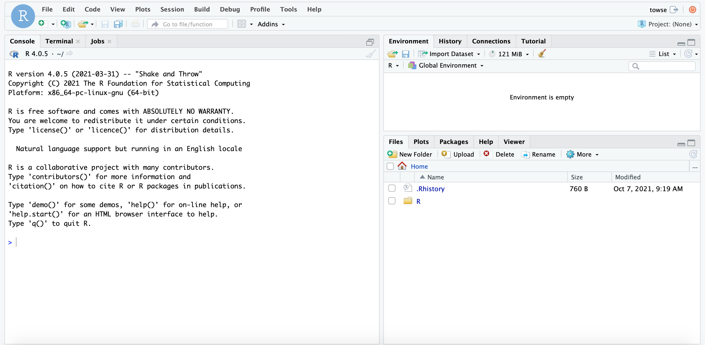

2 Week 1: Introduction to Statistics with R Studio
Written by John Towse & Tom Beesley
The exercises in this section are designed to familiarise you with working in R Studio.
2.1 Lab Work
2.1.1 Introducing R Studio
R and R Studio is the software that we will be using to explore and learn about analysis in your Psychology degree. It’s a computational engine: a very snazzy calculator that you should see as your friend and ally in the journey to understand and appreciate psychology. It sits alongside what we teach about the concepts and interpretation of statistical analysis.
R is the core software, R Studio is the interface for interacting with it. Put another way, R is the engine, R Studio is the cockpit.
Like even a simplest calculator, it just does what you ask (at least when you ask nicely!) but it requires the user to know what they want from it and to understand what it is telling you. A calculator can’t help a kid get the right answer to a multiplication problem if they don’t know the difference between multiplication and division and addition etc. And whilst a calculator is brilliant at doing the number crunching (and as a bonus, R Studio can help with turning the numbers into beautiful graphs and images too), even a calculator requires a thoughtful person to take the answers and make sensible interpretations from them.
Therefore, we need to learn both about the concepts of statistical analysis on the one hand, and the processing of statistical information -through R- on the other. The lectures will provide the starting point and the direction for statistical concepts, whilst these analysis labs provide the more practical experiences in how to use R, and how to R your ally. Over the next year, in these labs we will increasingly be using R Studio to focus on the latter, processing side, which will allow you to focus your energies on the conceptual side and its relevance for appreciating psychology.
2.1.2 Getting started with R Studio
For Lancaster University Psychology Students in 2021, we will be learning about R Studio through a simple but powerful web server architecture. That is, through the power of the internet, you can access and use R Studio by logging into a free account that we have provided and we will maintain for your use.
Here’s a little secret: There are several different ways to access R Studio. For example, you can download a copy of the software onto your computer, or use a Virtual Machine set up to run a copy. There’s nothing to stop you having your local copy, but please note - we can’t support your own version through lab classes
So why are we using an R Studio web server?
Uniformity of experience. It doesn’t matter whether you have a PC, a Mac, a Chromebook or whatever. The server provides a consistent, uniform experience. That also means we can spend more time helping you master the software, rather than translating between versions on different platforms
Ubiquity of experience. There are lots of computers on campus. There are computer rooms, there are pods in the learning centre, there are bookable laptops in the Levy Lab, and so on. Providing a web interface from a browser, means you can practice R from all the different machines. Your not limited to a particular copy on a single machine.
Consistency of performance. Since everyone logs into the same installation of R Studio, we can ensure that things work the way we expect. This allows staff to focus on teaching you the key issues, without worrying about software conflicts because different machines have different configurations, or different versions with different features etc. We’ll have more time to focus on the important stuff!
Quality of performance. Some installations of R Studio and some commercial versions of the server are set up, well, to be the basic version rather than the premium version. To draw a papelle: do you want to have to put up with the cheap, low-bandwidth broadband package? We’ve got control of the server set up, so we’ll try and make this the most effective way to do this.
We’ve moved to the R Studio server approach this year. We’ve tried hard to set it up to work well- Apologies in advance for any teething issues, we will try to resolve them as quickly as possible.
You will have received an email with your account information to log onto the R Studio server. Please keep your account details safe.
From a computer on the campus wifi, you can access R Studio at:
psy-rstudio.lancaster.ac.uk (off campus, you will need to be on the VPN)
At the login screen, use your university username (e.g., bloggsj)
Your password for R Studio is: [password here]
2.1.2.1 What does it look like?
When RStudio starts, it will look something like this: 
RStudio has three panels or windows: there are tabs for Console (taking up the left hand side), Environment (and History top right) , Current file (bottom right). You will also see a 4th window for a script or set of commands you develop, also (on the left hand side).
2.1.3 Let’s do something!
In the console window on the left hand side, there’s a command prompt “>”. This is where we ask RStudio to do our bidding!
- Click in the console window and we will get R to work as a calculator. Type in:
5 + 5and press enter. You should get the answer (amazing huh? OK, maybe not that amazing…). Use your imagination – ask a simple arithmetic question of your own choosing!
- In the first analysis lecture, we looked at measures of central tendency and how to calculate them. So let’s get R to do these calculations also!
First, we tell R about the data from the lecture. Copy the following line and paste it into the console, then press enter to run it:
PSYC121_week_1_data <- c(7,8,8,7,3,1,6,9,3,8)This creates an “object” called Analysis_week1_data. We can then perform calculations on this object. For example, we can find the mean by using the following command (again, copy and paste)
mean(PSYC121_week_1_data)Check the answer is the same we found in the lecture (it should be 6!).
Next, let’s ask for the median:
median(PSYC121_week_1_data)This also should be the answer from the lecture (7)
R doesn’t have a single corresponding command for the mode, but we can use this series of commands:
getmode <-
function(PSYC121_week_1_dataa) {
uniqv <- unique(PSYC121_week_1_data)
uniqv[which.max(tabulate(match(PSYC121_week_1_data, uniqv)))]
}
getmode(PSYC121_week_1_data)This is just a bit of clever jiggery-pokery that gets the mode.
2.1.4 Extra content
The commands above are designed to show you that with RStudio active, you can get quick and accurate answers to material covered in PSYC121 lectures.
All we have asked is that you write (or copy in) text to get the information. However, after the lab, you could play around with RStudio in your own time and think about the following:
In R, “<-” is the assignment operator as in the command we used:
PSYC121_week_1_data <- c(7,8,8,7,3,1,6,9,3,8)We create the variable label on the left (Analysis_week1_data) and we give it those number on the right. The name Analysis_week1_data is largely arbitrary: try use a variable of your own naming (your own name?) instead - and then use that alternative name for the other commands.
Throughout this year, we’ll use the convention of the “underscore” to separate words in labels (it_makes_them_easier_to_read than ifyoudidn’thaveanyspaces)
What does that tell you about the text used to get the mode? Can you figure out what each line does?
Also, once you have created a variable, you can check what the variable comprises by calling it at the command line. Just write its name, and R will respond with all the data points (all the X values it knows about). Take note that, as you write the variable label, R studio should offer to “auto-complete” the name. It only does that if it you have defined the variable, or are writing a known command.